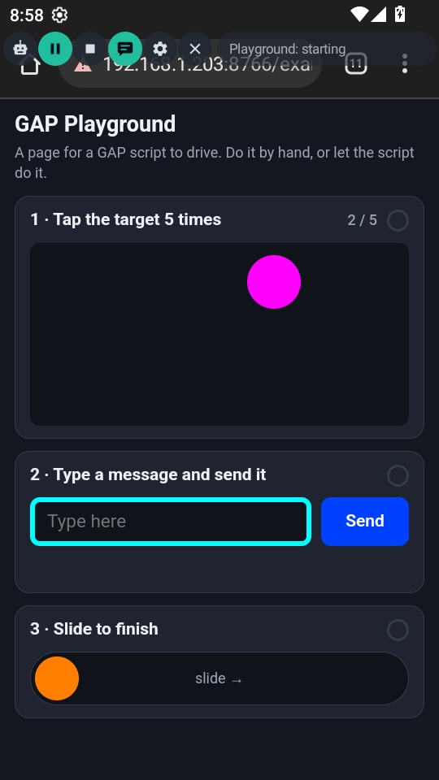
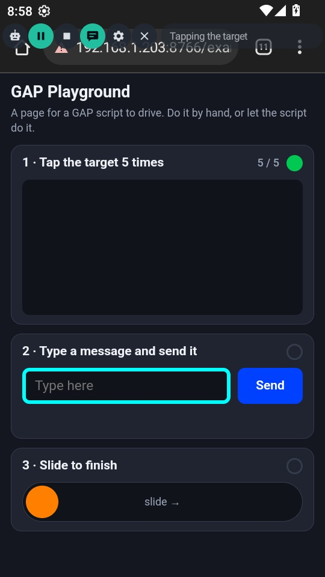
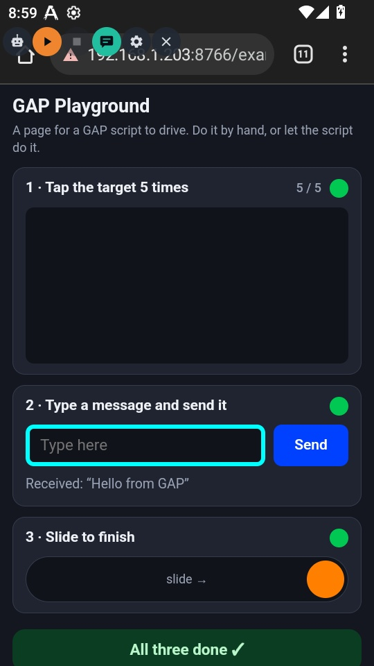
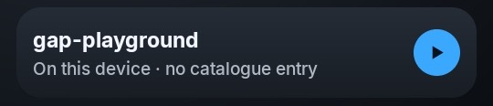
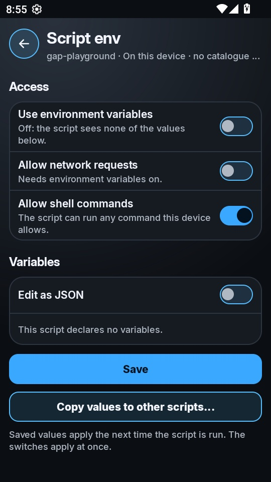

Example · tested on a device
GAP Playground:
a script, in action.
A complete script and a web page for it to drive. Open the page in a browser on the device, press Play, and watch GAP tap a moving target, type a message, and drag a slider — then check its own work.
1See it run
Real screenshots from GAP's own capture, on an Android 12 emulator at 540 × 960, started from the Library and the floating bar's ▶ Play like any user would.



[playground] opened http://<test server>/examples/gap-playground/web/playground.html [playground] waiting for the page [playground] tap 1 at 460,422 [playground] tap 2 at 165,422 [playground] tap 3 at 337,347 [playground] tap 4 at 375,435 [playground] tap 5 at 259,458 [playground] tasks done: 1 of 3 [playground] typed "Hello from GAP" [playground] pressed Send [playground] tasks done: 2 of 3 [playground] slid the knob to x=497 [playground] tasks done: 3 of 3 [playground] all three tasks done
The page was served from a local machine for the test, so the address bar and the log show a local address.
2The folder
gap-playground/ ├── index.js the script ├── index.html its settings page: page address, open it for me, message ├── web/ │ └── playground.html the page the script drives ├── screenshots/ the run above; not needed on the device └── README.md
3Run it yourself
- Copy the folder to the device, into GAP's scripts folder:
adb shell mkdir -p /sdcard/Download/GeneralAutomationPlatform/scripts adb push gap-playground /sdcard/Download/GeneralAutomationPlatform/scripts/
- In GAP, open Library → Local. The script is listed as on this device.

- Optional: let the script open the page itself. Tap the card, tap Settings, and turn on Allow shell commands (GAP asks you to confirm). Without it, open the playground page in the device's browser yourself.

- Tap ▶ on the card. The floating bar appears. Press ▶ Play on the bar.
4How it works
Every control on the page has a colour nothing else uses — magenta target, cyan text box, blue Send, orange knob — so the script finds them by colour, at any screen size. With an app you don't control, you'd find things by picture instead; the Quick start shows that.
| Step | Calls |
|---|---|
| Open the page | execute('am start -a android.intent.action.VIEW -d "…"') — the shell fallback, since no named call opens a URL. Returns "" while shell commands are off, and the script carries on. |
| Find a control | getScreenshot() → inRange() for its colour → findContours() for the patches → releaseImage() |
| Tap the target | tap(x, y, 400), until the target is gone |
| Type and send | tap() the text box, typing(text), find Send again, tap() it |
| Drag the slider | tapDown(), twenty moveTo(x, y, 15, true), tapUp() |
| Check its work | Count the green badges; try a task once more if it didn't register |
| Tell the user | console.log() for the log, showBanner() for the strip by the bar |
5The script
// GAP Playground: drives web/playground.html in a browser on the device.
//
// 1. taps a target that jumps somewhere new after every tap
// 2. types a message into a text box and presses Send
// 3. drags a slider to the end
//
// It finds each control by its colour, which works at any screen size, and
// checks its own work by counting the green "done" badges the page shows.
var running = false;
// The page gives every control a colour nothing else on it uses: [r, g, b].
var COLOURS = {
target: [255, 0, 255], // magenta
input: [0, 255, 255], // cyan border
send: [0, 64, 255], // blue
knob: [255, 128, 0], // orange
done: [0, 200, 83] // green badge on a finished task
};
var TOLERANCE = 40; // how far a pixel may be from the colour and still count
function log(message) {
console.log('[playground] ' + message);
}
// Every patch of one colour on the screen, biggest first, as boxes with a centre.
function findColour(screen, name, minArea) {
var c = COLOURS[name], t = TOLERANCE;
var mask = inRange(screen, c[2] - t, c[1] - t, c[0] - t, 0, // B, G, R, A low
c[2] + t, c[1] + t, c[0] + t, 255); // B, G, R, A high
var boxes;
try { boxes = findContours(mask, minArea || 100, 0); }
finally { releaseImage(mask); }
return boxes
.sort(function (a, b) { return b.area - a.area; })
.map(function (b) {
return { x: b.x, y: b.y, w: b.width, h: b.height,
cx: Math.round(b.x + b.width / 2), cy: Math.round(b.y + b.height / 2) };
});
}
// Take a screenshot, find one colour, and release the screenshot.
function look(name, minArea) {
var screen = getScreenshot();
if (screen === 0) return [];
try { return findColour(screen, name, minArea); }
finally { releaseImage(screen); }
}
// Look again and again until the colour shows up, or give up after timeoutMs.
function waitFor(name, timeoutMs) {
var until = Date.now() + timeoutMs;
while (running && Date.now() < until) {
var found = look(name);
if (found.length) return found[0];
sleep(300);
}
return null;
}
// How many tasks the page shows as done.
function doneCount() {
return look('done', 60).length;
}
function openPage(url) {
// There is no named call for "open this URL", so this is execute()'s job.
// It only works once "Allow shell commands" is on for this script.
var out = execute('am start -a android.intent.action.VIEW -d "' + url + '"');
if (out === '') {
log('shell commands are off, so open the page yourself: ' + url);
return false;
}
log('opened ' + url);
return true;
}
// Keep tapping until the target is gone: the page hides it after the last hit.
// The page, not our own count, says when we are done: a tap can be held back
// (GAP delays a script's touches while a finger is on its bar) or miss.
function tapTarget(maxTaps) {
for (var i = 1; i <= maxTaps && running; i++) {
var found = look('target');
if (!found.length) return true;
tap(found[0].cx, found[0].cy, 400);
log('tap ' + i + ' at ' + found[0].cx + ',' + found[0].cy);
}
return look('target').length === 0;
}
function sendMessage(text, retry) {
var input = waitFor('input', 3000);
if (!input) { log('text box not found'); return false; }
tap(input.cx, input.cy, 800); // focus it; the keyboard may slide up
if (retry) {
// The first try may have typed already: empty the box before typing again.
keycode('MOVE_END', 50);
for (var k = 0; k < text.length * 2; k++) keycode('DEL', 20);
}
typing(text, 300);
log('typed "' + text + '"');
var send = waitFor('send', 3000); // look again: the layout may have moved
if (!send) { log('Send button not found'); return false; }
tap(send.cx, send.cy, 800);
log('pressed Send');
return true;
}
function slideToEnd() {
var knob = waitFor('knob', 3000);
if (!knob) { log('slider not found'); return false; }
// The track ends as far from the right edge as it starts from the left, and
// the page stops the knob there, so aiming a little past the end is fine.
var endX = getScreenSize().width - knob.x;
tapDown(knob.cx, knob.cy, 50);
for (var step = 1; step <= 20; step++) {
moveTo(Math.round(knob.cx + (endX - knob.cx) * step / 20), knob.cy, 15, true);
}
tapUp(endX, knob.cy, 600);
log('slid the knob to x=' + endX);
return true;
}
function start(settings = {}) {
var url = settings.url || 'https://www.gapapp.app/examples/gap-playground/web/playground.html';
var message = settings.message || 'Hello from GAP';
running = true;
showBanner('Playground: starting', 2000);
if (settings.openPage !== false) openPage(url);
log('waiting for the page');
if (!waitFor('target', 20000)) {
log('no target on screen - is the playground page open?');
running = false;
return;
}
sleep(1000); // give the page a moment to settle before the first touch
var steps = [
['Tapping the target', function () { return tapTarget(15); }],
['Typing a message', function (retry) { return sendMessage(message, retry); }],
['Sliding to finish', function () { return slideToEnd(); }]
];
for (var i = 0; i < steps.length && running; i++) {
showBanner(steps[i][0], 3000);
// Do the task, then check the page agrees: one more try if it doesn't.
var done = 0;
for (var attempt = 1; attempt <= 2 && running; attempt++) {
steps[i][1](attempt > 1);
sleep(500);
done = doneCount();
if (done > i) break;
if (attempt < 2) log(steps[i][0].toLowerCase() + ' did not register, trying again');
}
log('tasks done: ' + done + ' of 3');
if (done <= i) break;
}
var done = doneCount();
log(done === 3 ? 'all three tasks done' : 'finished with ' + done + ' of 3 done');
showBanner(done === 3 ? 'Playground: all done' : 'Playground: ' + done + ' of 3', 4000);
running = false;
}
function stop() {
running = false;
}6What testing taught
- A tap can go missing. The first version counted its own taps and stopped at 4 of 5: one tap never registered. GAP also holds a script's touches back while a finger is on its bar (the log says input held for the user). So this version taps until the page says the task is done, and when a task doesn't register it tries once more, emptying the text box first so the message isn't typed twice.
- Look again after acting. Focusing a text box can bring up a keyboard and move things, so the script finds Send after typing, not before.
- Give the page a moment. The script waits a second after the page appears before its first touch.
- GAP ignores taps on its own bar that come from a script, so a script can't press its own Play or Stop by accident.